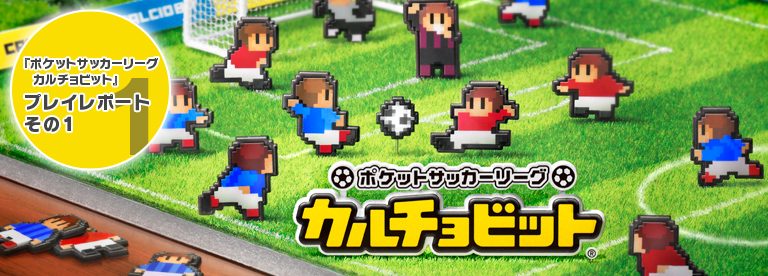
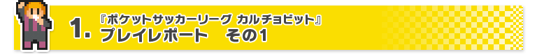
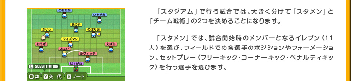
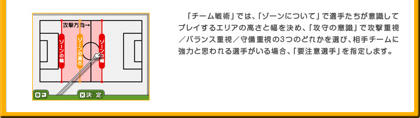
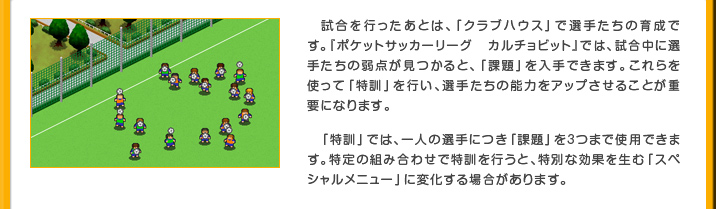
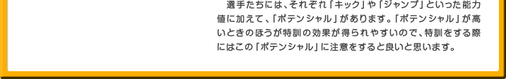
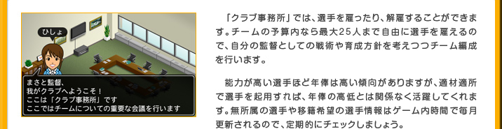
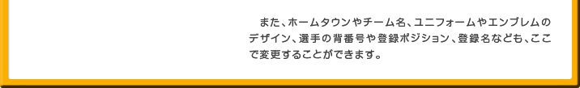

『ポケットサッカーリーグ カルチョビット』は、その名のとおりサッカーを題材にしたゲームですが、プレイヤーがサッカー選手を直接操作するようなアクション要素はありません。プレイヤーはクラブチームの監督になって選手を育成したり、戦術の指示をするなどします。あとは監督としてひたすら選手たちの試合を見守るというゲームです。


試合中は、得点や残り時間だけでなく、自分のチームの選手たちの疲れ具合やボールの支配率（それぞれのチームがボールを持っている時間）、シュートを打った本数など、実にさまざまなデータをリアルタイムで確認できます。試合展開とこれらのデータを参考に、選手のポジションを調整したり、選手を交代したり、「チーム戦術」を変更したりも可能です（※）。
このように、アクション要素がないといっても、本物のプロの試合さながらに、監督として決めることは非常にたくさんあります。サッカーの戦術については多少の知識がある筆者も、はじめてプレイしたときはどうしたらいいのかわからなくて迷ってしまうほどでした。
『ポケットサッカーリーグ カルチョビット』は、プレイヤーの采配次第で試合展開が大きく変わるのが一番面白いところです。最初のうちは選手の能力も低く、なかなか勝てませんが、戦術がうまくハマると、強いチームに勝てたり、思いがけない選手が活躍したりと、とにかく試合から目が離せません。


『ポケットサッカーリーグ カルチョビット』では、強いチームと試合をするほど「課題」がたくさん見つかりやすいです。つまり、弱いチームとだけ戦っていても、選手は強く育たないのです。
また、選手たちは試合を経験するほど、監督が指示する戦術を理解し、プレイヤーの期待するような巧みな動きを見せてくれるようになります。強いチームとも公式戦や練習・親善試合をたくさんして「課題」を見つけて、選手に「特訓」を行っていきましょう。
「特訓」では、選手の良さを伸ばすか、それとも弱点を補うか、というところも重要になります。その選手のポジションによっても、どの能力を先に上げたほうが良いのかは変わります。もちろん、選手の育成が足りていない部分を戦術で補うことも可能です。
最終的にどんなチームに仕上げるのか、という長期的な視点を持って各選手を育成するのは、難しくもあり、楽しくもあります。手塩にかけて育てた選手が、試合で考えていたとおりのプレイをしてくれたときのうれしさは本当に格別です。


バランスのとれたチーム作りを目指すのか、はたまた一点豪華主義で高額年俸選手を雇うのか。面白いチーム名や選手の登録名を考えて、ネタチーム作りに走るのか。チーム編成の自由度は非常に高く、個性あふれるチーム作りが可能です。
また、本作ではクラブチームのホームタウンを実在の市町村（2011年10月1日時点）から選択できるようになっています。自分の地元や出身地をホームタウンにすれば、よりチームに対する愛着がわいて、試合や育成にもさらに熱が入るはずです。
『ポケットサッカーリーグ カルチョビット』は、そのレトロで可愛らしいグラフィックからは想像できないほど、多彩な戦術と、リアルな試合展開を楽しむことができるゲームです。
サッカーはあまりよくわからないという方や、育成シミュレーションゲームは複雑そうで苦手という方でも、試行錯誤しながらプレイしていけば、感覚をつかんでいくことができるので大丈夫です。また、試合を見ているだけで面白いので、プレイしていて疲れるようなことがほとんどありません。ちょっとした空き時間にぼんやりと試合をながめるようなプレイスタイルでも十分に楽しめます（※）。
ちなみに『ポケットサッカーリーグ カルチョビット』は、『ベストプレープロ野球』や『ダービースタリオン』など、「見て楽しむ」ゲームを多数手がけている株式会社パリティビットの薗部博之さんが開発されています。
筆者は『ダービースタリオン』をプレイして、それまでまったく見たことがなかった競馬を見るようになった経験があります。『ポケットサッカーリーグ カルチョビット』も同じように、ゲームでサッカー観戦の面白さがわかる、ということがあるはずです。サッカーはプレイするどころか見るのも未経験という方にも、おすすめできるソフトなのです。